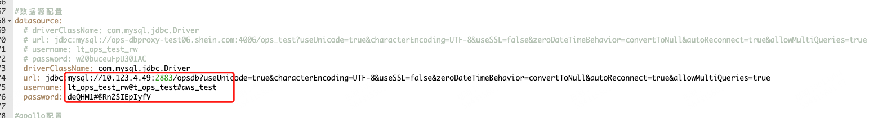

OceanBase 介绍
#OceanBase 概述
- 高可用
多副本架构使得城市级故障RPO=0，数据无损。OceanBase主备库特性使得集群间可以数据同步。oms可以使得迁移更加便捷。

- 高兼容性
对于mysql和oracle数据库生态给予了很好的支持

- 多租户
单集群下可以为不同租户提供服务，充分利用服务性能

- 高性能
基于lsm-tree结构的存储引擎使得读写超越关系型数据库
- 透明可扩展
OceanBase特色的总控服务和分区负载均衡使得系统具有极强的可扩展性，可以在线扩缩容，扩缩容后自动实现负载
- 分布式事务引擎
支持事务ACID属性，并且支持强一致性
- 混合事物和分析处理
分布式计算引擎可以充分利用多个节点计算能力，完成对OLTP和OLAP应用的支持
2. 系统概述

3. MySql 兼容性对比
- 数据类型
不支持空间数据类型
- SQL语法
不支持 SELECT … FOR SHARE …
- 字符集和字符序
支持现在线上使用字符集
- 函数
ob不支持的函数在OPS中不涉及使用
- 分区支持
ob二级分区类型支持优于mysql
- 存储引擎
基于lsm-tree架构的存储引擎
二、 OceanBase 架构
1 ．整体架构


- 1. OBServer
每个节点会运行一个或多个observer的服务进程，每个服务负责自己所在节点上分区数据的存取，也负责路由到本机SQL语句的解析执行，通过TCP/IP 协议通信，同时每个服务与外部应用建立连接提供服务
1. 2. RootService
- 资源管理
Region/Zone/Observer/Resource Pool/Unit等元信息管理，比如上下线OBServer，改变tenant资源规格等等
- 负载均衡
决定Unit/Partition在多个机器间的分布，均衡机器间主分区个数，在容灾场景还可以补充缺失Replica
- Schema管理
负责处理DDL请求并生成新Schema
1. 3. PartiotionService
分区服务用于负责每个OBServer上各个分区的管理和操作功能的模块，这个模块与事务引擎和存储引擎存在很多调用关系
1. 4. Paxos 组
- OB基于Paxos的分布式选举算法实现系统高可用，最小力度可以做到分区级别
- 主副分区通过multi-paxos分布式共识协议进行日志同步实现数据一致性，分区和副本构成独立的Paxos复制组，主分区分布在不同Observer上可以实现多点写入
1. 5. 存储引擎（ LSM-Tree ） Log Structured Merge Tree

简介
增量数据存放在内存(MemTable)，基线数据存放在磁盘(SSTable)。
内存达到阈值会转储SSTable
最终和基线SSTable(ROS) 合并
插入 / 更新/ 删除 / 查询
-
插入
-
写入内存树，同时会更新支撑的数据结构，如行缓存级别布隆过滤器和稀疏索引
-
内存树超过阈值，会将内存树数据按照顺序刷到转储SSTable
-
更新
-
通过行缓存查询对应数据，更新数据刷到内存树
-
行缓存不存在，查询块缓存 -\> 转储SSTable -\> 基线SSTable，load到内存更新
-
删除
1、将删除数据标记为墓碑数据，最终转储到基线SSTable，压实后可以将此内存区域清空
- 查询
1、通过布隆过滤器查询行缓存，存在直接查询行缓存，不存在查询内存树和块缓存，仍不存在查询基线SSTable
1. 6 ． SQL 引擎
- 解析器
解析成语法树，转换成数据库对应的对象（库/表/列/索引等），将SQL改写为另一条等价SQL以便生成最优执行计划
- 优化器
为SQL请求生成最佳的执行计划，综合SQL语义、对象数据特征、对象物理分布多方因素，解决访问路径选择、联接算法选择、分布式计划生成等多个核心问题，最终选择一个对应该SQL最佳执行计划
- 执行器
对于本地执行计划，Executor会简单的从执行计划的顶端算子调用，由算子自身逻辑完成执行过程，并返回执行结果，对于远程或分布式计划，Executor需要根据预选的划分，将执行树分成多个调度的线程，并通过RPC将其发送给相关的节点执行。执行计划的生成耗时较长，尤其OLTP场景，为了加速SQL请求处理过程，会缓存SQL第一次生成的执行计划缓在内存反复执行。
2. 多租户架构
i. 概述
租户既是数据库对象的容器，又是资源（CPU/Memory/IO）的容器。
ii. 系统租户
管理所有普通租户
iii. 普通租户
可以看作是一个数据库实例
iv. 租户与资源管理
-
租户的资源管理
-
创建资源配置
- 创建资源池并指定资源池在zone上的分配
-
创建用户绑定资源池，一个资源池仅属于一个用户，一个用户可以有多个资源池但是在同一个zone下仅允许存在一个资源池
-
如何做到资源隔离
非容器化技术，通过控制资源单元实现
- 内存完全隔离
- CPU不完全隔离
- 事务相关数据结构是分离的
- Clog共享
大查询策略：大查询最多占用百分之30woker线程，挂起大查询优先小查询，开一个新的worker线程，必须小于最大线程数阈值。
风险：大查询执行比预期时间长
3 ．数据库对象
表
i. 表概述
自增列：
- 多分区唯一
- 语句内递增
- 生成自增列值大于用户显示插入的值
ii. 分区表
分区表有别于普通表，普通表不支持添加分区。分区表每个分区维护一套自己的SSTable。
iii. 表组

分区方式相同且放在同一个分区的不同表组成的组
分区表放在同一台Observer上可以减少跨机器通信，减少分布式事务带来的成本
索引
i. 简介
可用性：drop partition后索引为不可用状态，同时DML操作也无需维护索引
可见性：索引设置为不可见时优化器会忽略，DML时需维护索引，可删除索引时设置以观察业务
ii. 局部索引（ LOCAL ）与全局索引（默认）
局部索引：单分区内索引，每个分区维护一套

全局索引：
- 全局非分区索引：多分区维系一套索引，索引可能会映射到多个分区

- 全局分区索引：索引通过hash或者list分散到不同分区，索引与数据分区策略不同，所以多个分区都要查

全局索引使用场景：
- 需要用全局唯一索引
- 业务的查询无法得到分区键的条件谓词，且业务表没有高并发的同时写入，为避免进行全分区的扫描，可以根据查询条件构建全局索引，必要时可以将全局索引按照新的分区键来分区。
iii. 唯一索引和非唯一索引
唯一索引：索引表通过指定列和可变主表主键列
非唯一索引：索引表通过指定的索引列和主表主键
iv. 索引使用
OceanBase 数据库查询索引表数据的完整过程如下：
在 MemTable 中查询数据。
在 SSTable 中查询数据。
将 MemTable 和 SSTable 中的数据融合，得到完整的行。
分区
i. 分区键
一个列或多个列的集合
ii. 分区类型
分区策略：
Range/List/Hash
每级分区一种分配方法
- Range分区
仅支持一列且需返回INT类型
- Hash分区/Key分区
表达式仅支持返回INT类型，
Hash分区在OLTP场景更优
KEY分区只能是列或不指定，不限于INT
- List分区
仅支持List类型
- 组合分区
iii. 分区索引
- 局部前缀
通过局部前缀索引定位到分区键对应的唯一一个索引分区，减少索引分区访问量
- 局部非前缀
无法通过分区键定位到一个分区，需要多分区均做查询
- 全局前缀
如果全局分区索引的分区键是索引键的左前缀，那么这个索引称为全局前缀索引。
全局前缀索引可以是唯一索引或者非唯一索引。
全局前缀索引只在用 Range 分区时有意义，对于 Hash 分区索引无意义。原因在于，如果是用户选择 Hash 分区索引，那么用户查询模式一定是指定索引键的点查询，索引键如果覆盖分区键的话，那么是否为前缀索引并无意义，都能够通过用户指定的索引键值算出索引分区；如果用户没有指定全部分区键值，Hash 分区索引则需要访问所有的分区数据，而 Range 分区可以进行一定程度的分区裁剪。
- 全局非前缀
OceanBase 数据库不支持全局非前缀索引，全局非前缀索引对于查询优化并没有太多意义。
例如，表 A 上有一个全局索引 idx(c1,c2)，idx 通过 c2 进行分区，那么 idx 为一个非全局索引。这种情况下，只有当用户指定全部索引键值的时候才能进行分区裁剪，其他情况均需要扫描所有的索引分区，因此用户没有理由不直接用 c1 键做分区，使用 c1 还能通过前缀过滤进行分区裁剪
唯一索引
4 ．分布式数据库对象
4.1 集群架构
OceanBase 为了数据安全和提供高可用的数据服务，每个分区数据在物理上存储多份，每一份就是分区的一个副本。
分区副本包括存储在磁盘上的静态数据（ SSTable ）、存储在内存的增量数据（ MEMTable）、以及记录事务的日志三类主要的数据。


当前，OceanBase 数据库支持以下四种类型的副本：
- 全能型副本（FULL/F）
- 日志型副本（LOGONLY/L）
- 加密投票型副本（ENCRYPTVOTE/E）
- 只读型副本（READONLY/R）
4.2 数据分区和分区副本

支持分区裁剪和分区感知 JOIN。如果分区个数过少，会导致资源不足，扩容复杂；当分区个数过多，可能会导致分布式查询过多，消耗资源。
4.3 动态扩容和缩容
弹性扩缩容分为垂直扩容，水平扩缩容和按需预扩缩容。垂直扩容可以在线替换节点，动态调整 UNIT 规格。水平扩缩容可以动态添加删除节点，动态调整租户 UNIT 数量，支持自动负载均衡。按需扩缩容能够快速可靠弹入弹出，主要用于大促如黑五、斋月等资源短期扩容场景。

5. 事务管理
5.1 事务简介
5.2 事物结构
5.3 语句级原子性
5.4 全局时间戳
5.5 事务控制
5.6 Redo 日志
5.7 本地事务
5.8 分布式事务
5.9 XA 事务
5.10 事务并发和一致性
三、实操
- docker exec -it obstandalone bash
- obclient -h 127.0.0.1 -P 2881 -u root@sys -p -c -A oceanbase #密码默认为空#登陆管理员账号
- select tenant_name from __all_tenant; # 查看租户配置
select name from __all_resource_pool;
select name from __all_unit_config;
- drop tenant obmysql force; #删除租户配置
drop resource pool obmysql;
drop resource unit obmysql;
- select unit_config_id, name from __all_unit_config; #查看当前资源规格及资源池配置
select resource_pool_id, name from __all_resource_pool;
- create resource unit my_unit1 max_cpu=1, max_memory='1g', max_iops=128, max_disk_size='5g', max_session_num=64, min_cpu=1, min_memory='1g', min_iops=128; # 创建资源单元
create resource pool my_pool1 unit='my_unit1', unit_num=1, zone_list=('zone1'); #创建资源池
- create tenant my_tenant1 resource_pool_list=('my_pool1'); #创建租户
- obclient -h 127.0.0.1 -P 2881 -u root@my_tenant1 -p -c -A oceanbase #登陆租户
- create database demodb; #创建数据库
- create table t1(id int(4) primary key, name varchar(20)); #创建表
- insert into t1(id, name) values (1,'zhangsan');
select * from t1; #操作表
迁移问题
- 批量插入是否主键 id 不对应问题（待确认）
mybatis主键获取策略参照MapperMethod，非mybatis生成，根据服务器返回每行二进制rowdata获取
-
扫描是否出现漏扫问题
-
热切方案